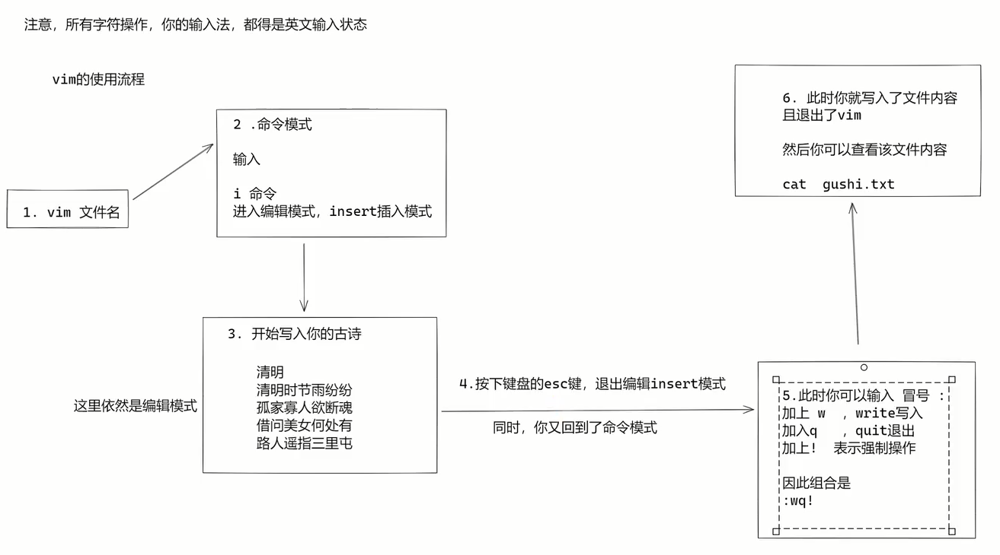
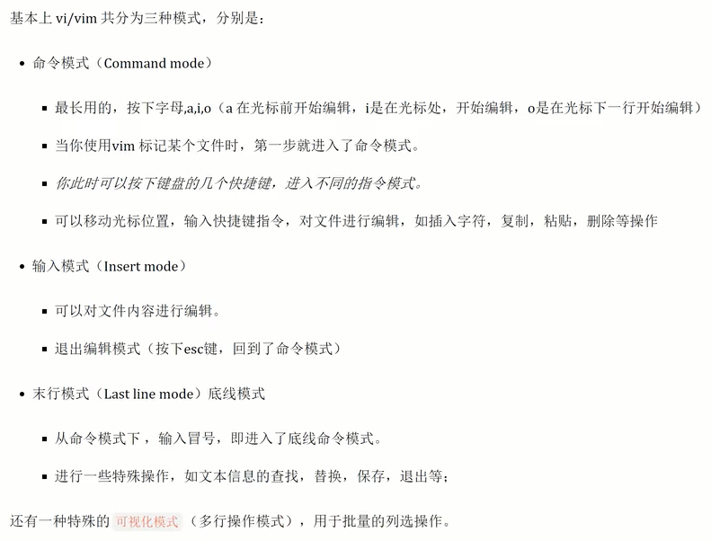
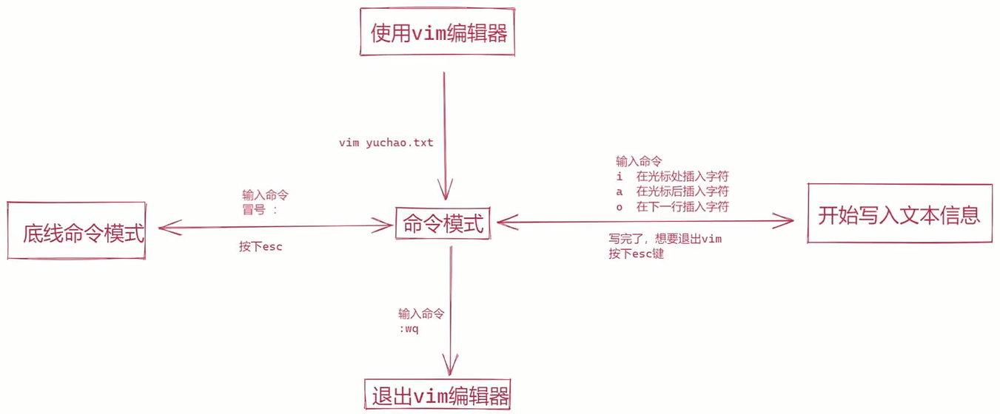
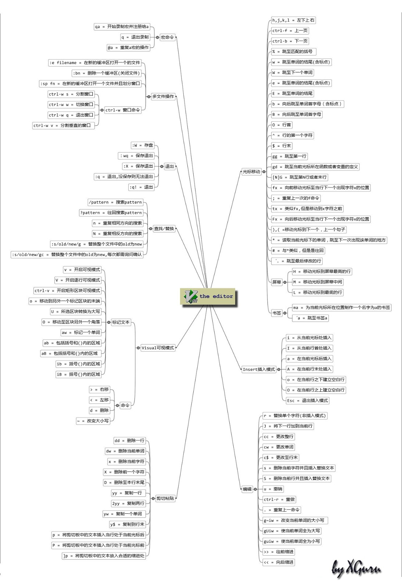
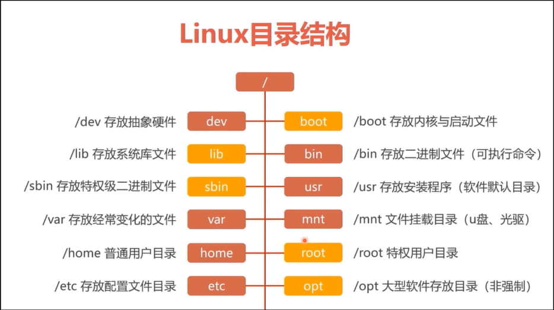
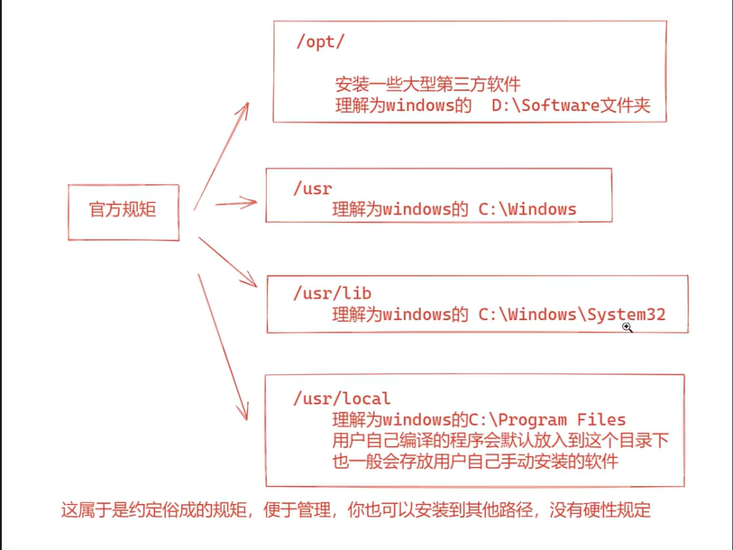

1>相关文章
2>远程连接
- xshell (推荐)
SSH客户端 Xmanager Power Suite 6.0.0012r-实测可下
- securtCRT
- ssh命令连接
#ssh 账号@ip 端口号(可不写, 默认22)
ssh root@192.168.157.128 22
3>linux和win相互传输文件
- lrzsz
# 安装命令
yum install lrzsz -y
# rz: win=>linux, sz: linux=>win
# 输入rz后弹框, 将win的文件传到linux
rz
# 将指定文件传到win
sz new_zip_file.zip
- xftp
- ftp
4>常用命令
命令格式
| 命令 | 空格 | 条件/参数 | 空格 | 对象/条件/目录 |
|---|---|---|---|---|
| rm | -f | /tmp/testFile.txt |
- 若命令带多个参数时候, 有两种写法
- ls -l -h
- ls -lh
whoami 查看当前的登录账号
who 查看有多少用户登录到该系统, 简单显示
w 查看有多少用户登录到该系统, 详细显示
which 用来查询环境变量里的文件的所在目录
which ls
which mysql
id 验证用户是否存在
# 查看当前的用户信息, 等同whoami
id
# 验证dylanxu是否存在
id dylanxu
su 账号切换
# 推荐这种切换方式
su - root
su - dylanxu
# 这种方式没有变更环境变量和权限
su root
su dylanxu
useradd 创建系统用户
useradd testuser1
passwd 设置系统用户密码
passwd testuser1
hostname 查看主机名
hostnamectl 更改主机名
hostnamectl set-hostname dylanxu.centos7
uname 打印系统信息
uname -a
man 命令手册
man ls
clear 清空命令窗口
pwd 打印当前工作目录, print work directory
cd 切换目录
cd /etc
# 定位到上一次的工作目录
cd -
ls 打印列表
# -l: 列表方式展示信息
# -h: 已用户
# -d:
# -a:
# 以用户友好的方式，显示指定目录下的文件及文件夹信息
ls -lh /var/log
# 查看当前目录下所有文件, 包含隐藏文件
ls -a
# 查看当前文件夹的信息
ls -lhd
tree 树形结构显示文件及文件夹信息
- 如果提示没有tree命令, 则需要安装
- ubuntu：sudo apt-get install tree
- centos：yum -y install tree
tree
# 只显示以 /（根目录） 开头的目录树的第一级, -L 选项告诉树你想看到多少层目录.
tree -L 1/
# -N 显示中文, -F 显示文件类型
tree -FN
state 显示文件或文件系统的状态。
touch 创建普通文件
- 若该目录下，不存在同名文件，则创建新文件
- 若该目录下，存在同名文件，则更新文件的时间属性
touch /home/dylanxu/test_folder_1/test_file_1.txt
# 以点号开头的文件(文件夹), 为隐藏文件(文件夹)
touch .test1.txt
# 在同级目录下批量创建多个文件
touch ./f_1/{file_1.txt,file_2.txt,file_3.txt}
# 批量创建N个文件
touch f_2/temp{1..10}.log
rm 删除文件/目录
- 谨慎使用, 若用的虚机, 请做好快照
- 删前切换到root账号, 获取最大权限
# -r: 递归删除, 主要用于删除目录, 可删除指定目录及包含的所有内容, 包括所有子目录和文件
# -f: 强制删除, 不提示任何信息, 操作前一定要慎重
# -v: 显示进行的步骤
# -i: 执行删除前, 提示用户是否确认删除
# 递归强制删除文件夹
rm -rfv folder1/
# 强制删除文件
rm -f bb.txt
mkdir 创建目录
- 支持一次创建多个目录
- 支持创建层级目录
- 不允许创建同名目录
mkdir /home/dylanxu/test_folder_1
# 一次创建多个文件夹
mkdir test-folder-2 test_folder_3
# 递归创建文件夹
mkdir -p test_folder_4/test_folder_4_1
# 批量创建同级目录
mkdir -p ./f_1/{f_1_1,f_1_2,f_1_3}
# 批量创建N个文件夹
mkdir -p f_3/f3_{1..10}
rmdir 删除目录
- 删除空目录, 目录不为空, 则无法删除
rmdir test_fiolder_1
# 一次删除多个文件夹
rmdir t5/t5_1/ t5
cp 复制文件
# f: 如果目标文件无法打开则将其移除并重试
# -r: 递归复制目录及其子目录内的所有内容
# -v: 显示明细信息
# i: 覆盖前询问(使前面的 -n 选项失效)
# -l, --link: 链接文件而不复制
# -n: 不要覆盖已存在的文件
# -p --parents: 将目标的父目录结构copy到目标目录
# 将一个文件复制到指定目录下, 保持原来的文件名
cp ./aa.txt test_folder_1/
# 将一个文件复制到指定目录下, 使用新的文件名
cat aa.txt test_folder_1/aa_copy.txt
# 备份aa.txt，并在尾部加上.bak后缀
cp test_folder_1/aa.txt{,.bak}
# test_folder_3不存在的情况下, 将test_folder_2改名并复制成test_folder_3, 并将test_folder_2内的所有文件及文件夹递归复制到test_folder_3
cp -rfv test_folder_2 test_folder_3
# test_folder_4存在的情况下, 将test_folder_2及其内部所有的内容, 递归复制到test_folder_4
cp -rfv test_folder_2 test_folder_4
# 将aa.txt.clone文件复制到test_folder_5, 并在test_folder_5创建该文件的父目录结构
cp -f -v -p --parents test_folder_4/test_folder_2/aa.txt.clone test_folder_5
mv 剪切, 重命名
# -f: 覆盖前不询问
# -i: 覆盖前询问
# -v: 显示明细信息
# 将aa.txt重命名为hi.txt
mv aa.txt hi.txt
# 为hi.txt添加后缀.py
mv hi.txt{,.py}
# 将文件hi.txt.py移动到test_folder_7
mv hi.txt.py ./test_folder_7
# 将cc.txt移动到test_folder_7, 并重命名为cc.txt.bak
mv cc.txt ./test_folder_7/cc.txt.bak
# 将test_folder_6移动到test_folder_7, 若test_folder_7不存在, 则该命令的作用是将test_folder_6重命名为test_folder_7
mv test_folder_6 test_folder_7
# 将test_folder_7复制到test_folder_8, 并重命名为test_folder_7_clone
mv -fv test_folder_7 test_folder_8/test_folder_7_clone
ip 查看ip
ip address
cat 查看文件内容
# -n: 显示行号
cat test-file-1.txt
cat -n test_file_0.txt
head 默认显示前10行记录
# -n 前N条
head -n 5 test-file-1.txt
head -5 test-file-1.txt
tail 默认显示前10行记录
# -n 最后N条
tail -n 5 test-file-1.tx
tail 5 test-file-1.tx
grep 输出包含指定字符串的行
grep 'dylanxu' test-file-1.txt
history 查看历史输入的命令, 默认3000条
# -c: 清空记录
# 显示历史记录
history
# 清除记录
history -c
echo 输出内容
# 单引号内的为纯字符串, 不会当做命令, 而双引号则会将特殊符号识别为命令
echo 'hi dylan'
echo ${PATH}
echo $name
# 将字符串写入到文件
echo 'hi dylan' > test_file_1.txt
# 将字符串追加到文件
echo 'good bye' >> test_file_1.txt
exit 退出当前账号
logout 退出当前账号
bash 重新加载用户的环境变量, 更新用户的机器信息
ln 创建快捷方式
alias 命令别名
- alias的效力仅及于该次登入的操作, 若要每次登入是即自动设好别名，可在/etc/profile或自己的~/.bashrc中设定指令的别名.
# 显示所有别名设置
alias
# 设置别名
alias cls='clear'
alias tree='tress -FN'
unalias 删除别名
# 删除指定别名
unalias cls
unalias tree
tar 将多个文件打包成一个文件
- 命名规范
- .tar: 仅打包
- .tar.gz: 打包+压缩
- .tgz: 打包+压缩
- 仅用了打包, 解包不能用-zjJ参数
- 用什么参数压缩, 就用什么参数解压缩, 如压缩
-czvf, 则解压-xzvf -f一定要在最后
# -c: 创建包
# -v: 显示明细信息
# -f: 指定打包的文件名, 必须有这个参数, 且必须在最后一位
# -t: 列出包里的内容
# -u: 更新原打包文件中的文件
# -C: 解压到指定目录
# -x: 解包
# -z: 压缩为.gz格式
# -j: 压缩为.bz2格式
# -J: 压缩为.xz格式
# 将当前文件夹内的所有内容打包到all_file.tar, 不压缩
tar -cvf all_file.tar ./*
# 将当前文件夹内的所有内容打包并压缩到all_file.tar
tar -czvf all_file.tar.gz ./*
# 查看all_file.tar包里的内容
tar -tf all_file.tar
# 将压缩包all_file.tar.gz解压到test_folder_9目录
tar -xzvf all_file.tar.gz -C ./test_folder_9
# 将文件robot_1.txt到robot_3.txt文件打包到all_robot.tar, 打包后的文件大小为103M
tar -cvf all_robot.tar robot_{1..3}.txt
# 将文件robot_1.txt到robot_3.txt文件打包并压缩到all_robot.tar.gz, 打包后的文件大小为15M
tar -czvf all_robot.tar.gz robot_{1..3}.txt
zip 压缩多个文件或目录
- 压缩目录需要用
-r - 包的文件名如果没有后缀
.zip, 会自动加上, 不过建议自己加上.zip
# -v: 显示明细信息
# -r: 用于压缩文件夹
# 压缩robot_1.txt和robot_2.txt文件到当前目录, 压缩包名称为robot.zip
zip robot.zip robot_{1..2}.txt
# 若robot.zip存在, 则往压缩包里追加robot_3.txt文件
zip robot.zip robot_3.txt
# 压缩robot_1.txt到robot_4.txt文件, 并且将folder_3/递归压缩
zip -rv new_zip_file.zip robot_{1..4}.txt folder_3/
uzip 查看zip包的内容, 测试压缩包是否完整, 解压缩zip包
# -t 检查压缩文件是否正确
# -v: 查看压缩文件信息
# -Z: 查看压缩文件信息
# -d: 将压缩包的内容解压到指定文件夹
# -j: 不处理压缩文件中原有的目录路径。
# -n: 解压缩时不要覆盖原有的文件。
# 校验压缩包正确性
unzip -t new_zip_file.zip
# 查看压缩包内容
unzip -v new_zip_file.zip
unzip -Z new_zip_file.zip
# 解压缩到当前文件夹
unzip new_zip_file.zip
# 解压缩到指定文件夹
unzip new_zip_file.zip -d ./tmp
rename 将文件重命名
# 将*.txt文件的txt改成html
rename txt html temp/*.txt
md5sum 获取文件md5值
md5sum new_zip_file.zip
wget 是一个下载文件的工具
- 支持HTTP, HTTPS和FTP协议, 可以使用HTTP代理
- 可以在用户退出系统的之后在后台执行
- 支持断点续传, 出错重试
- 从网络上下载资源, 如果没有指定目录, 则会默认下载到当前目录
# wget [参数] [URL地址]
# -b: 启动后转入后台执行
# -v: 显示明细信息
# -t=NUMBER: 设定最大尝试链接次数(0 表示无限制)
# -w=SECONDS: 两次尝试之间间隔SECONDS秒
# -nc: 不要覆盖存在的文件或使用
# -c: 接着下载没下载完的文件
# –-limit-rate=RATE 限定下载输率
# 下载并重命名
wget -O wordpress.zip http://www.minjieren.com/download.aspx?id=1080
# 限速下载
wget --limit-rate=300k http://www.minjieren.com/wordpress-3.1-zh_CN.zip
# 断点续传
wget -c http://www.minjieren.com/wordpress-3.1-zh_CN.zip
# 后台下载
wget -b http://www.minjieren.com/wordpress-3.1-zh_CN.zip
# 伪装代理名称下载
wget --user-agent="Mozilla/5.0 (Windows; U; Windows NT 6.1; en-US) AppleWebKit/534.16 (KHTML, like Gecko) Chrome/10.0.648.204 Safari/534.16" http://www.minjieren.com/wordpress-3.1-zh_CN.zip
# 使用wget –spider测试下载链接
wget --spider URL
# 增加重试次数
wget --tries=40 URL
# 把下载信息存入日志文件
wget -o download.log URL
# 使用wget FTP下载
# 匿名下载
wget ftp-url
# 用户名和密码认证的ftp下载
wget --ftp-user=USERNAME --ftp-password=PASSWORD url
# 编译安装
tar zxvf wget-1.9.1.tar.gz
cd wget-1.9.1
./configure
make
make install
# 也可使用yum安装
yum install wget -y
nmtui 可视化界面配置网络参数
sudo service network restart 重启网络服务
5>vim
简单操作
- 安装
yum install -y vim



常用命令
# 退出
:q
# 强制退出
:q!
# 保存
:w
# 另存为名为filename文件
:w [filename]
# 将另外一个文件读入到正在编辑的文件
:r [filename]
# 将n1行到n2行的数据另存为名为filename文件
:n1,n2 w [filename]
# 保存并退出
:wq
# 保存并强制退出
:wq!
# 保存并退出
:x
# 跳转到指定行
:行号
# 开启代码高亮
:syntax on
# 关闭代码高亮
:syntax off
# 开启代码高亮
:syntax enable
# 开启搜索高亮
set hlsearch
# 关闭搜索高亮
set nohlsearch
# 输入搜索字符串的同时进行搜索
set incsearch
# 搜索时忽略大小写
set ignorecase
# 开启光标位置提示
set ruler
# 显示行号
set number
# 不显示行号
set nonu
# 命令部分高度为1
set cmdheight=1
# 自动缩进
set autoindent
# 不自动缩进
set noautoindent
# 智能缩进
set smartindent
# 当文件在外部被改变时，vim自动更新载入
set autoread
# 显示匹配的括号
set showmatch
# 删除操作
# 删除光标所在行
dd
# 删除从光标所在行开始，向下的n行
ndd
# 删除从光标所在行开始，到第一行的所有行
d1G
# 删除从光标所在行开始，到最后一行的所有行
dG
# 删除从光标所在位置，到行尾的所有字符
d$
# 删除从光标所在位置，到行首的所有字符
d0
# 每按一次，删除光标所在位置的后面一个字符
x
# 删除光标所在位置的“后面”n个字符
nx
# 大写的X，每按一次，删除光标所在位置的前面一个字符
X
# 删除光标所在位置的前面n个字符
nX
# 复制操作
# 复制光标所在行
yy
# 复制从光标所在行开始，向下的n行
nyy
# 复制3行
3yy
# 复制从光标所在行开始，到第一行的所有行
y1G
# 复制从光标所在行开始，到最后一行的所有行
yG
# 复制从光标所在位置，到行尾的所有字符
y$
# 复制从光标所在位置，到行首的所有字符
y0
# 将光标所在行与下一行合并成一行
J
# 复制当前光标所在的字母到该单词的最后一个字母
yw
# 复制当前光标所在的单词
yaw
# 粘贴操作
# 小写字母p，粘贴剪贴板中的数据，从光标所在行的下一行开始
p
# 大写字母P，粘贴剪贴板中的数据，从光标所在行的上一行开始
P
# 撤销与重做操作
# 撤销上一个操作
u
# 重复上一操作
.
# 替换操作
# 替换光标所在处字符
r
# 进入替换模式，直至按ESC退出
R
# 替换光标所在行
cc
# 替换光标所在的英文单词
cw
# 转换大小写
~
# 排版操作
# 光标所在行左对齐
:le
# 光标所在行右对齐
:ri
# 光标所在行居中
:ce
# 显示最近在vim里面输入的历史
:history
# 向下搜索字符串string
/string
# 向上搜索字符串string
?string
# 粘贴模式
# 进入粘贴模式
:set paste
# 退出粘贴模式
:set nopaste

6>yum
yum是RedHat系列的高级软件包管理工具
- 主要功能是更方便的添加/删除/更新RPM包。
- 能自动解决包的依赖性问题。
- 能便于管理大量系统的更新问题。
- 可以同时配置多个资源库(Repository)
- 简洁的配置文件(/etc/yum.conf)
- 自动解决增加或删除rpm包时遇到的倚赖性问题
- 保持与RPM数据库的一致性
# 安装软件包
yum install <package_name>
# 删除软件包
yum remove <package_name>
# 查找软件包
yum search <keyword>
# 列出所有可安装的软件包
yum list
# 列出所有可更新的软件包
yum list updates
# 列出所有已安装的软件包
yum list installed
# 列出所有已安装但不在 Yum Repository 内的软件包
yum list extras
# 列出所指定的软件包
yum list <package_name>
7>wget
8>其他知识点
linux系统大小写敏感
linux不关心扩展名, 用ls -l查看文件权限, 以权限位为准
linux注释符: #
Tab补全
指令补全, 命令敲一点, 使用Tab提醒匹配的命令
文件及文件夹(路径)补全, 文件或文件件敲一点, 使用Tab提醒匹配的命令
Linux命令提示符
[dylanxu@localhost ~]
dylanxu -> 登录账号
@ -> 占位符
localhost -> 主机名
~ -> 当前在哪儿个文件夹
文件夹概念
- . 当前工作目录
- .. 当前工作目录的上层目录
- ~ 用户的家目录
- - 前一个目录
常见的重要目录
- /opt, 第三方软件安装目录
- /home, 普通用户家目录
- /root, root用户的家目录
- /etc, 存放各种配置文件的目录
- /var/log, 各种系统日志


变量
param1='dylanxu'
# 推荐写法
echo ${param1}
# 简写
echo $param1
环境变量
${PATH}
作用跟win system一样, 以冒号分割的路径字符串, 查找顺序从左往右, 挨个搜索文件夹
# 修改环境变量的值
echo ${PATH}
# /usr/local/bin:/usr/bin:/usr/local/sbin:/usr/sbin:/home/dylanxu/.local/bin:/home/dylanxu/bin
PATH=/usr/local/bin:/usr/bin:/usr/local/sbin:/usr/sbin:/home/dylanxu/.local/bin:/home/dylanxu/bin:/home/dylanxu/test-folder-1
echo ${PATH}
# /usr/local/bin:/usr/bin:/usr/local/sbin:/usr/sbin:/home/dylanxu/.local/bin:/home/dylanxu/bin:/home/dylanxu/test-folder-1
${LANG}
可以修改linux的中英文切换
# en_US.UTF-8
echo ${LANG}
# 切换成简体中文
LANG='zh_CN.UTF-8'
linux系统文件
/etc初始化系统重要文件
- /etc/sysconfig/network-scripts/ifcfg-eth0 网卡配置文件
- /etc/resolv.conf linux系统DNS客户端配置文件
- /etc/hosts 系统本地的DNS解析文件
- /etc/fstab 配置开机设备自动挂载的文件
- /etc/rc.local 存放开机自动启动程序命令的文件
- /etc/iinittab 系统启动设定运行级别等配置的文件
- /etc/profile及/ect/bashrc 配置系统的环境变量/别名等的文件
- /etc/profile.d 用户登录后执行的脚本所在的目录
- /etc/issue和/etc/issue.net 配置在用户登录中断前显示信息的文件
- /usr/lib/systemd/system 软件启动从恒旭所在的目录
- /etc/motd 配置用户登录系统自后显示提示内容的文件
- /etc/redhat-release 声明redhat版本号和名称信息的文件
- /etc/sysctl.conf linux内核参数设置文件
/proc重要路径
- /proc/meminfo 系统内存信息
- /proc/cpuinfo 关于处理器的信息, 如类型, 厂家, 型号, 性能等
文件(夹)命名规则
区分大小写
尽量都用小写字母
- 如果需要对文件名进行分割, 使用_
- 长度不能超过255字符
- 文件尽量给正确的拓展名, 易于查看
linux分2个大类
- RedHat系列:
Redhat、Centos、Fedora等- 常见的安装包格式
rpm, 安装rpm包的命令是rpm -参数 - 包管理工具
yum - 支持
tar包
- 常见的安装包格式
- Debian系列:
Debian、Ubuntu等- 常见的安装包格式
deb, 安装deb包的命令是dpkg -参数 - 包管理工具
apt-get - 支持
tar包
- 常见的安装包格式
9>账号
all user pwd: 070806880507